Cases / Espécie em Extinção
Projeto anterior à BoldBrands
Espécie em Extinção
Campanha de conscientização que transformou o fechamento de empresas no Brasil em pauta nacional.
Este case foi realizado em equipe, com a participação de Bruno Leal, hoje sócio da BoldBrands, antes da fundação da empresa. Ele faz parte da trajetória dos sócios que nos trouxe até aqui.
- Cliente
- G4 Educação
- Ano
- 2024
- Escopo
- Conceito de campanha, direção de arte, filme, redes sociais e mídia exterior digital
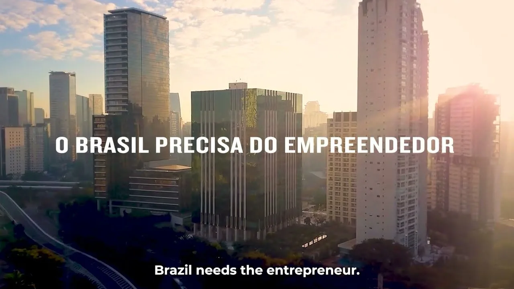
O desafio
A extinção da espécie empreendedora podia ser, para o Brasil, um ponto de não retorno.
Fizemos a campanha de marca do G4 Educação, baseada no conceito #EspécieEmExtinção: o empreendedor brasileiro tratado como uma espécie ameaçada, com um visual inspirado na Amazônia e um chamado à evolução, em vez de um lamento. A campanha teve ampla divulgação em mídia exterior (OOH) e digital e uma forte ação de PR, o que gerou amplo engajamento orgânico.
Pico de buscas no Google pela hashtag #EspécieEmExtinção. Veículos que publicaram de forma orgânica: CNN, Revista Oeste, Jornal da Cultura, BP Money, Jornal Floripa, Notícias Hoje, Último Segundo, Brasil Urgente Notícias, Adnews, Jornal Destaque, Vale On Notícias, Jornews, Expresso 222 e Página 1 PB.
O que foi feito
Conceito
#EspécieEmExtinção: o empreendedor brasileiro tratado como uma espécie ameaçada. Um chamado à evolução, e não um lamento.
Linguagem visual
Apelo visual inspirado na Amazônia, com vistas aéreas da floresta que se misturam à cidade e uma tipografia condensada e contundente.
Filme-manifesto
Uma paródia de documentário da Amazônia para chamar atenção de outra espécie em extinção: o empreendedor.
Mobilização e mídia
Do aquecimento com a hashtag ao lançamento oficial, com 348 influenciadores ativados, fotos de apoiadores com placas, entrevistas na TV e mídia exterior digital no Aeroporto de São Paulo.
A campanha em uso
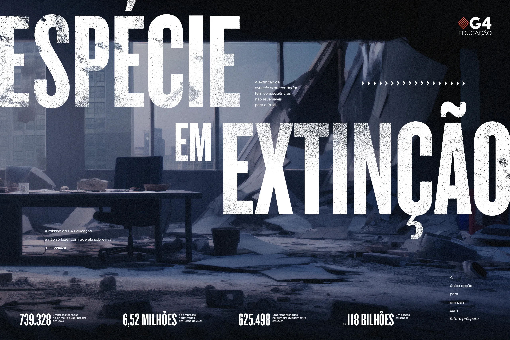
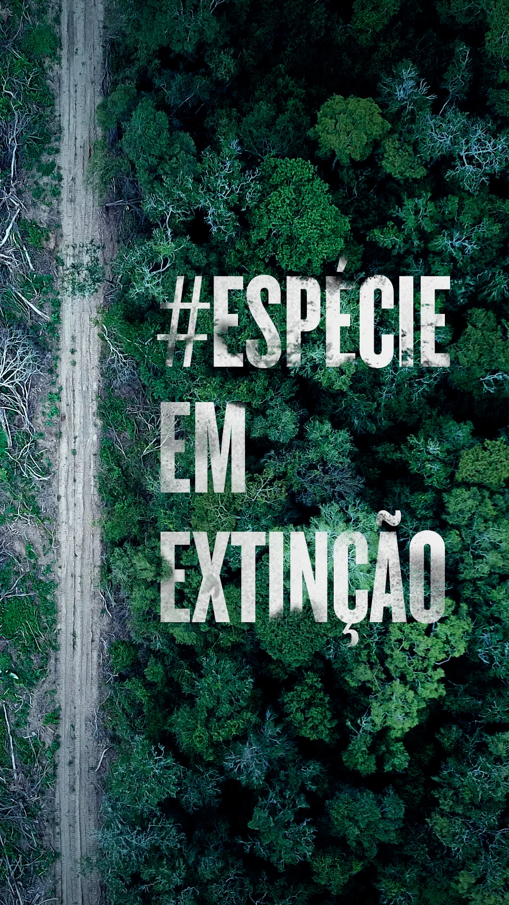
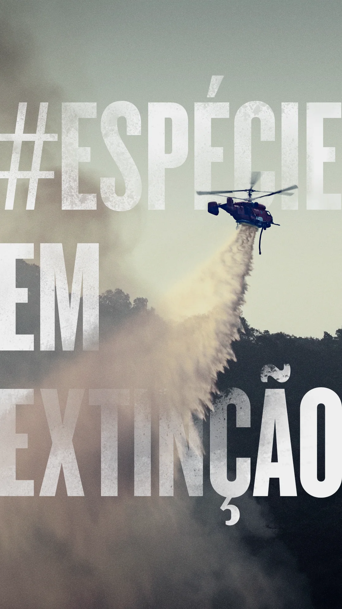
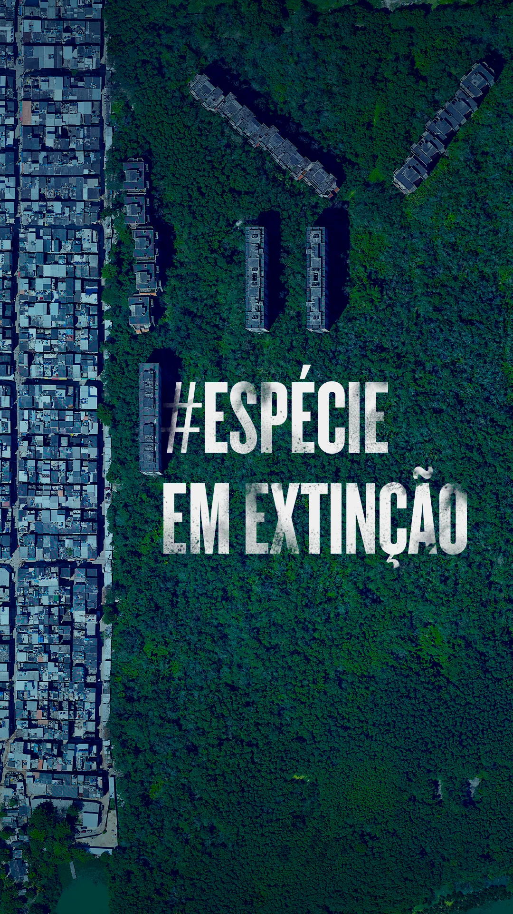
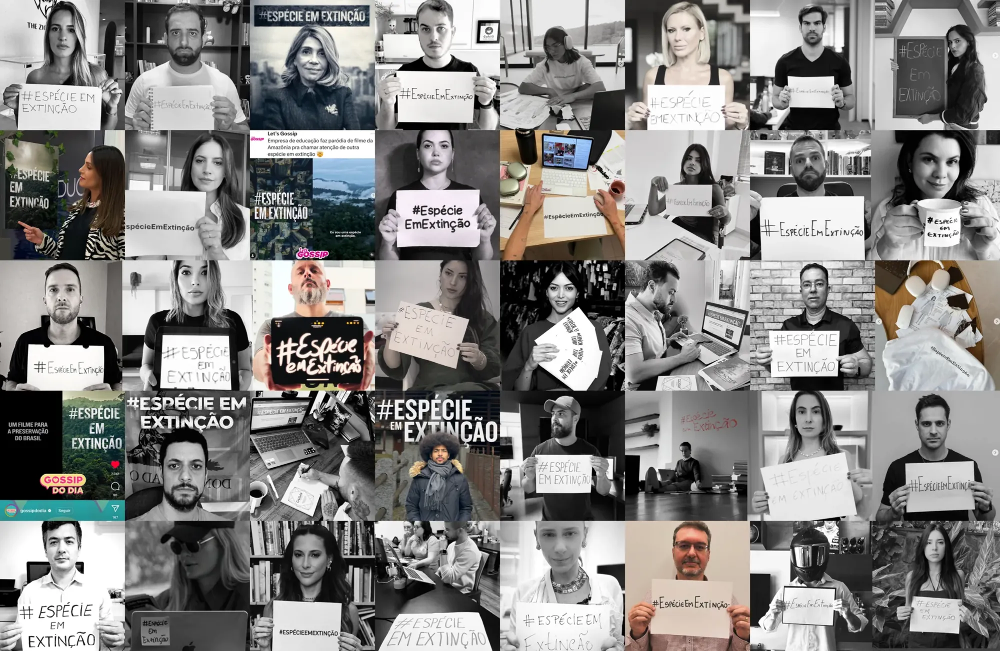
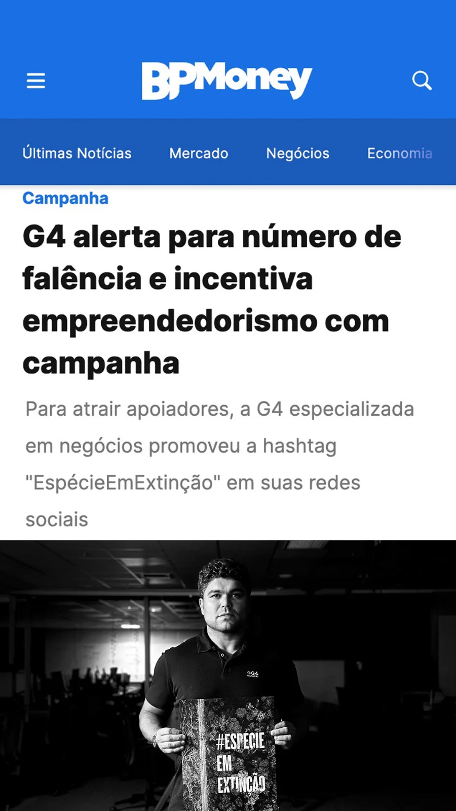
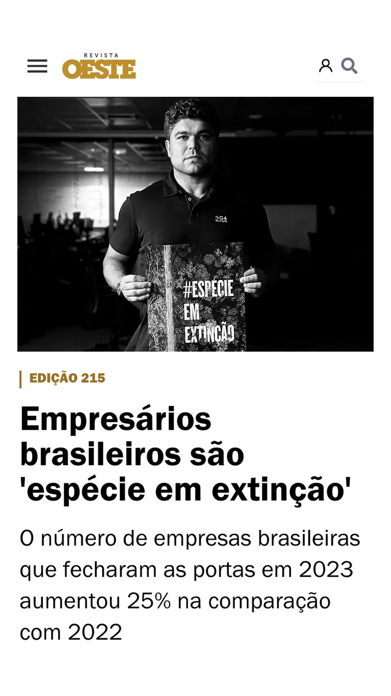
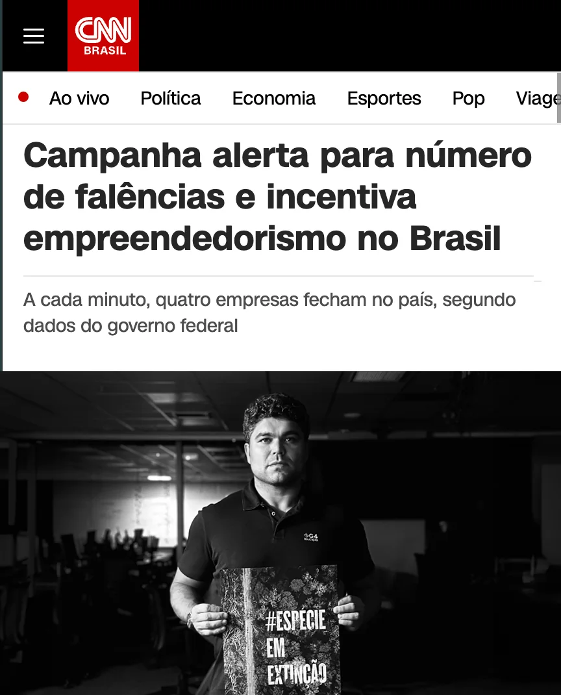
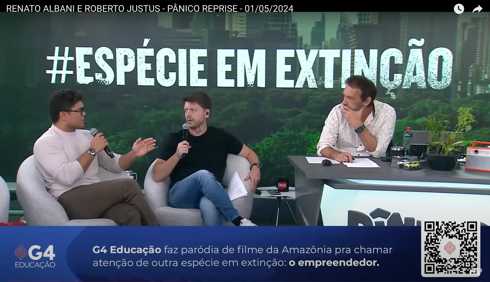
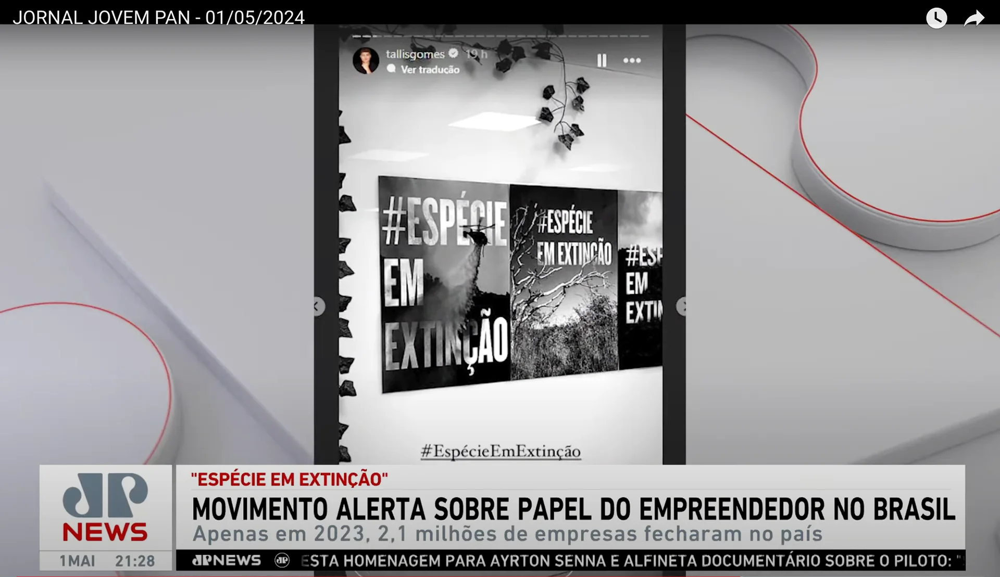
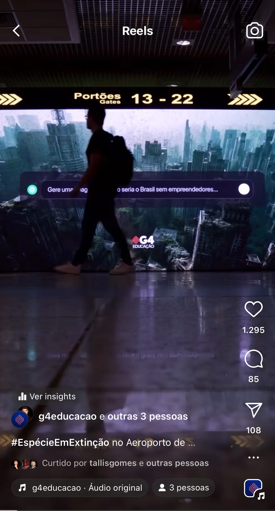
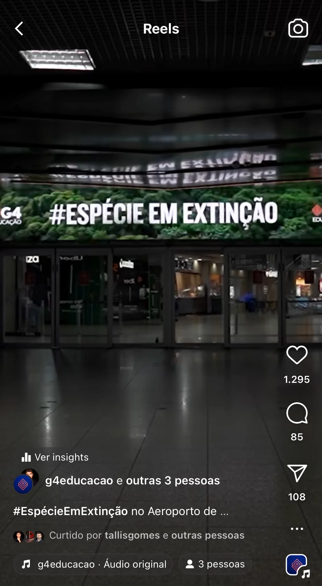
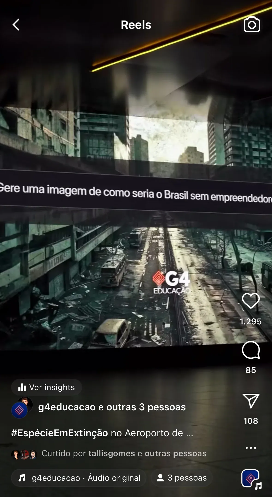
O resultado